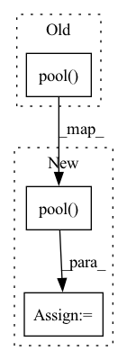

Pattern ID :3103
Before Change
x = self.mvit[2](x)
x = self.conv2(x)
x = self.pool( x) .reshape([-1, x.shape[1]])
x = self.fc(x)
return x
After Change
x = self.mvit_block_3(x)
x = self.conv1x1(x)
x = self.pool( x)
x = x.reshape(x.shape[:2])
x = self.linear(x)
return x
In pattern: SUPERPATTERN
Frequency: 5
Non-data size: 3
Instances Fragment ID: 11946512
Project Name: br-idl/paddlevit
Commit Name: 8830bbf1fbf940d9ae0cfd9625201c78addcf9f5
Time: 2021-10-20
Author: xperzy@gmail.com
File Name: image_classification/MobileViT/mobile_vit.py
M Class Name: MobileViT
N Class Name: MobileViT
M Method Name: forward(2)
N Method Name: forward(2)
M Parent Class: nn.Layer
N Parent Class: nn.Layer
M File Name: image_classification/MobileViT/mobile_vit.py
N File Name: image_classification/MobileViT/mobile_vit.py
M Start Line: 211
M End Line: 228
N Start Line: 362
N End Line: 380
Before Change
self.pool = nn.AdaptiveAvgPool2d(output_size)
def forward(self, x):
return self.pool( x)
def feat_mult(self):
return adaptive_pool_feat_mult(self.pool_type)
After Change
self.pool = nn.AdaptiveAvgPool2d(output_size)
def forward(self, x):
x = self.pool( x)
if self.flatten:
x = x.flatten(1)
return x
def feat_mult(self): Fragment ID: 11946510
Project Name: feng-lab/pytorch-image-models
Commit Name: 0004f37d25d59622ae82b3b9cc3583ddacff97c9
Time: 2020-04-27
Author: rwightman@gmail.com
File Name: timm/models/layers/adaptive_avgmax_pool.py
M Class Name: SelectAdaptivePool2d
N Class Name: SelectAdaptivePool2d
M Method Name: forward(2)
N Method Name: forward(2)
M Parent Class: nn.Module
N Parent Class: nn.Module
M File Name: timm/models/layers/adaptive_avgmax_pool.py
N File Name: timm/models/layers/adaptive_avgmax_pool.py
M Start Line: 89
M End Line: 89
N Start Line: 90
N End Line: 93
Before Change
if self.stype=="normal" or self.stride==1:
outs.append(spx[:, self.nums*self.width: (self.nums+1)*self.width])
elif self.stype=="stage":
outs.append(self.pool( spx[:, self.nums*self.width: (self.nums+1)*self.width]) )
out = concat(outs, 1)
out = self.conv3(out)After Change
if self.scale != 1 and self.stype=="normal":
out = jt.concat((out, spx[self.nums]),1)
elif self.scale != 1 and self.stype=="stage":
out = jt.concat((out, self.pool( spx[self.nums]) ),1)
out = self.conv3(out)
out = self.bn3(out) Fragment ID: 11946508
Project Name: jittor/jittor
Commit Name: c7b78f570e490793fee8e15b3bfcbec08683cdfe
Time: 2021-04-03
Author: randonlang@gmail.com
File Name: python/jittor/models/res2net.py
M Class Name: Bottle2neck
N Class Name: Bottle2neck
M Method Name: execute(2)
N Method Name: execute(2)
M Parent Class: nn.Module
N Parent Class: nn.Module
M File Name: python/jittor/models/res2net.py
N File Name: python/jittor/models/res2net.py
M Start Line: 56
M End Line: 72
N Start Line: 67
N End Line: 84
Before Change
def forward(self, x):
_, _, h, w = x.size()
x1 = F.interpolate(self.pool( x) , size=(h, w), mode="bilinear", align_corners=True)
x2 = self.bn1(self.conv1(x))
x3 = self.bn2(self.conv2(x))
x4 = self.bn3(self.conv3(x))After Change
def forward(self, x):
_, _, h, w = x.size()
x1 = F.interpolate(self.conv1(self.pool( x) ), size=(h, w), mode="bilinear", align_corners=True)
x2 = self.bn2(self.conv2(x))
x3 = self.bn3(self.conv3(x))
x4 = self.bn4(self.conv5(x))
x5 = self.bn5(self.conv5(x))
x = torch.cat((x1, x2, x3, x4, x5), 1)
x = self.bn6(self.conv6(x))
return x
Fragment ID: 11946509
Project Name: j911/deeplabv3plus-for-beginners
Commit Name: cda9b039bd06cdd360822eb7d5b1d7a3d11157e7
Time: 2020-01-10
Author: jaemin.lee.email@gmail.com
File Name: models/deeplabv3.py
M Class Name: ASPP
N Class Name: ASPP
M Method Name: forward(2)
N Method Name: forward(2)
M Parent Class: nn.Module
N Parent Class: nn.Module
M File Name: models/deeplabv3.py
N File Name: models/deeplabv3.py
M Start Line: 27
M End Line: 34
N Start Line: 28
N End Line: 35
Before Change
def forward(self, x):
_, _, h, w = x.size()
x1 = F.interpolate(self.conv1(self.pool( x) ), size=(h, w), mode="bilinear", align_corners=True)
x2 = self.bn2(self.conv2(x))
x3 = self.bn3(self.conv3(x))
x4 = self.bn4(self.conv5(x))After Change
def forward(self, x):
_, _, h, w = x.size()
x1 = self.relu(self.bn1(self.conv1(self.pool( x) )))
x1 = F.interpolate(x1, size=(h, w), mode="bilinear", align_corners=True)
x2 = self.relu(self.bn2(self.conv2(x)))
x3 = self.relu(self.bn3(self.conv3(x)))
x4 = self.relu(self.bn4(self.conv5(x))) Fragment ID: 11946507
Project Name: j911/deeplabv3plus-for-beginners
Commit Name: 774a80b8b2abaae218b0fc26162f20f22b0d214c
Time: 2020-01-11
Author: jaemin.lee.email@gmail.com
File Name: models/deeplabv3.py
M Class Name: ASPP
N Class Name: ASPP
M Method Name: forward(2)
N Method Name: forward(2)
M Parent Class: nn.Module
N Parent Class: nn.Module
M File Name: models/deeplabv3.py
N File Name: models/deeplabv3.py
M Start Line: 28
M End Line: 35
N Start Line: 31
N End Line: 39